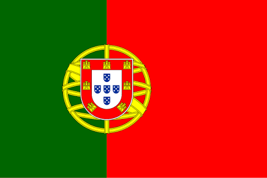
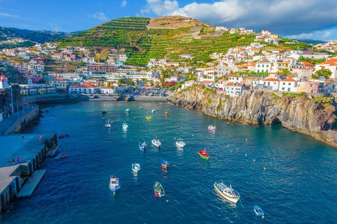
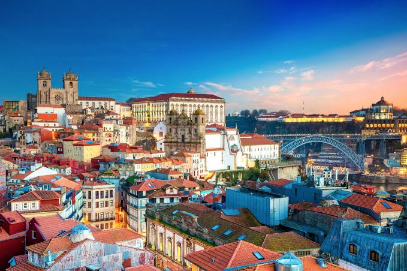

Portugal es un país ubicado en el suroeste de Europa, en la península ibérica, conocido por su costa atlántica y su rica historia marítima. Su idioma oficial es el portugués, hablado por millones de personas en distintos continentes.
Su capital es Lisboa, famosa por sus tranvías, miradores y barrios históricos como Alfama, además de combinar tradición con zonas modernas.

Heróis do mar, nobre povo,
Nação valente, imortal,
Levantai hoje de novo
O esplendor de Portugal!
Entre as brumas da memória,
Ó pátria, sente-se a voz
Dos teus egrégios avós,
Que há-de guiar-te à vitória!

laderas de Portugal

Oporto